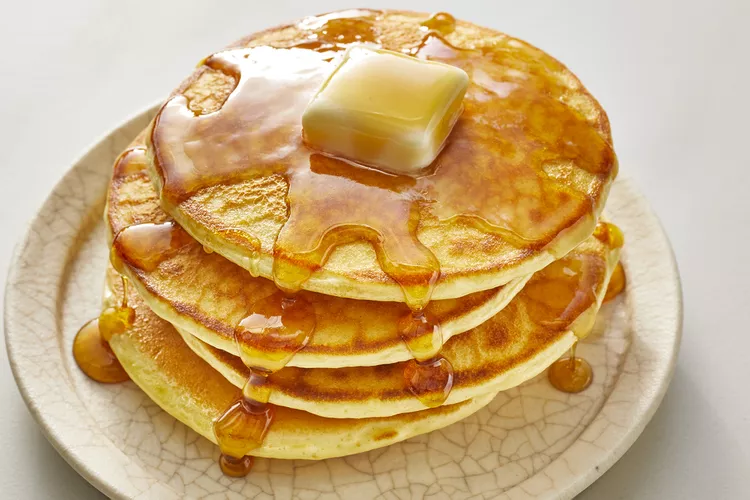

This good old-fashioned pancakes recipe is a classic that has been loved for generations.
These fluffy, homemade pancakes will quickly become a family favorite.
You'll find the full, step-by-step recipe below - but here's a brief overview of what you can expect when you make good old-fashioned pancakes:
Sift flour, baking powder, sugar, and salt together in a large bowl. Make a
well in the center and add milk, melted butter, and egg; mix until smooth.
Heat a lightly oiled griddle or pan over medium-high heat. Pour or scoop
the batter onto the griddle, using approximately 1/4 cup for each
pancake; cook until bubbles form and the edges are dry, about 2 to 3
minutes. Flip and cook until browned on the other side. Repeat with
remaining batter.